SetRealParameterDefine Real parameter (GUI not yet satisfactory) |

|
Information
This information is part of the Modelica Standard Library maintained by the Modelica Association.
This is an experimental component to define a Real parameter in the diagram layer. The idea is to drag the icon from the package browser into the diagram layer. Then a window pops up in which the properties of this parameter can be defined (such as the default value). The name and default value of the parameter are displayed in the icon of this component. Whenever clicking on it, the dialog to change parameter settings pops-up.
In Dymola, the described property is not fully available. Currently, when dragging this component in the diagram layer, a dialog pops up in which the properties of the parameter can be defined. However, afterwards, the parameter is not visible in the diagram layer. Making it visible requires to go into the text layer and add an annotation with the component size, resulting for example in:
parameter StateGraph.Temporary.SetRealParameter name = 2
annotation(Placement(transformation(extent={{-10,-10},{10,10}})));
This change makes the parameter icon visible in the diagram layer. However, clicking on this icon has no effect. Changing parameter properties, such as the default value, still requires to go in to the text layer.
Type Information
| Real |
|---|
Used in Components (3)
|
Modelica.StateGraph.Examples.Utilities
Controller for tank system |
|
|
Modelica.StateGraph.Examples.Utilities
State machine defining the time instants when to fill or empty a tank |
|
|
Modelica.StateGraph.Examples.Utilities
Composite step used to demonstrate exceptions (in StateGraph.Examples.ShowExceptions) |